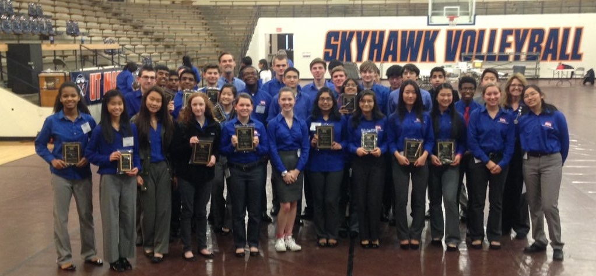
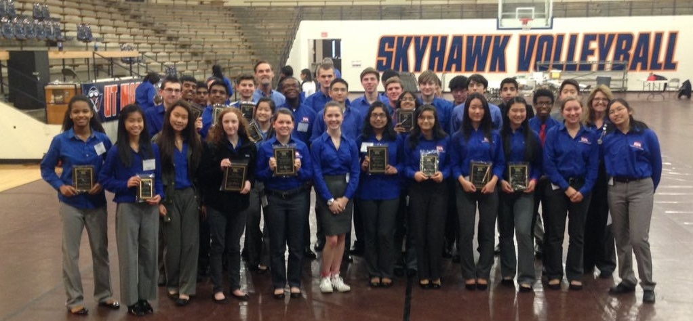

Every year, our chapter competes at the local, state, and national levels for TSA competitions. Over the years, our students have seen much success in their work and have found a love for science through TSA.

In the annual Paper Power Competition, local high school students are tasked to create artwork on site using recycled paper to promote environmental awareness. This year, our chapter had two teams compete with a Disney's Tangled theme.

Every year, the CANstruction competition at the Univeristy of Memphis challenges students to create a 3-D model of their choice using only cans. After the competition, the structures are taken down, and all the cans are donated to charity. Last year, our school constructed a replica of PacMan.